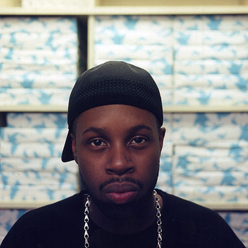
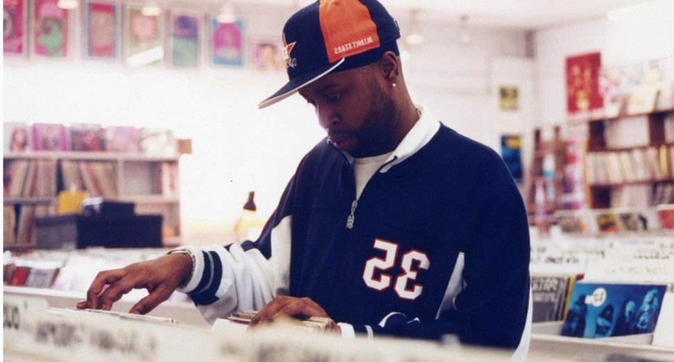
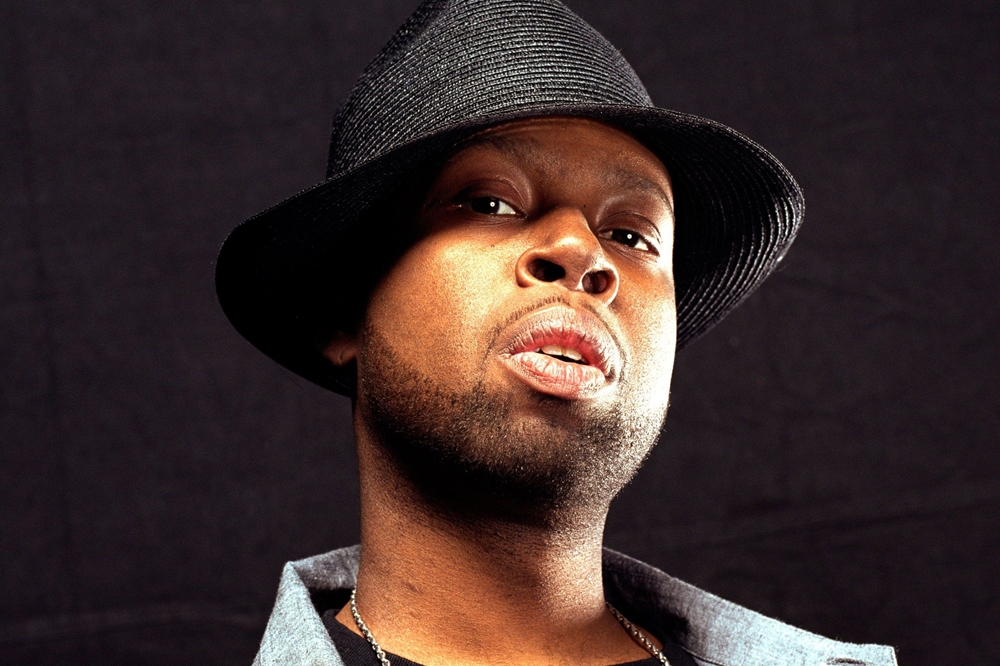
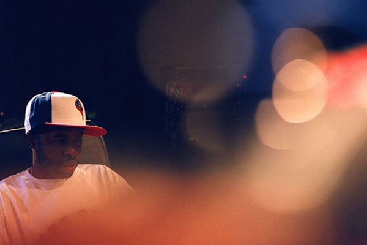
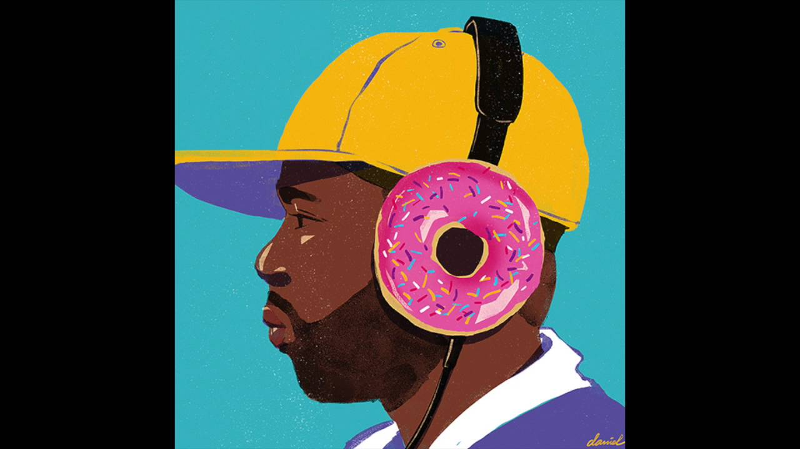
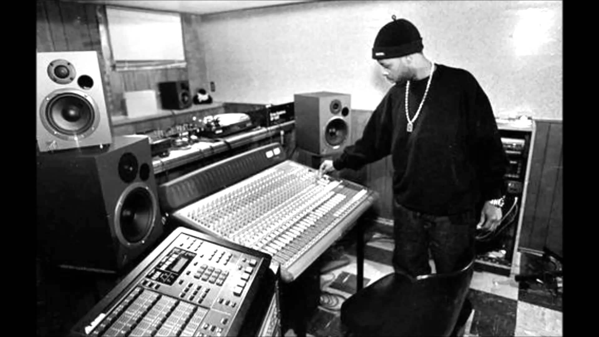

J Dilla






"Dilla was one of the greatest hip hop producers of all time"
James Dewitt Yancey better known by the stage names J Dilla and Jay Dee, was an American record producer and rapper
who emerged in the mid-1990s underground hip hop scene in Detroit, Michigan, as one third of the acclaimed music group Slum Village.
His obituary at NPR stated that he "was one of the music industry's most influential hip-hop artists."
He is considered by some as the "godfather of lo-fi hip hop". (Wikipedia)